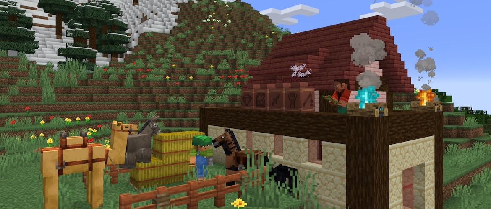
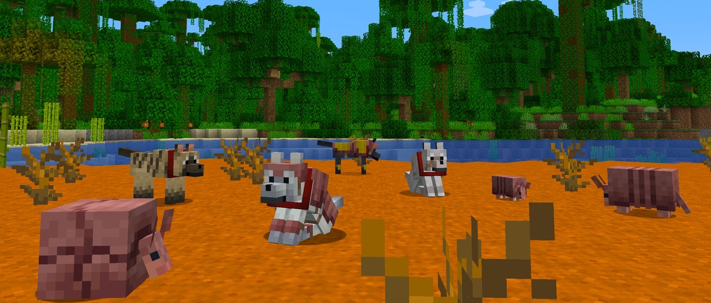
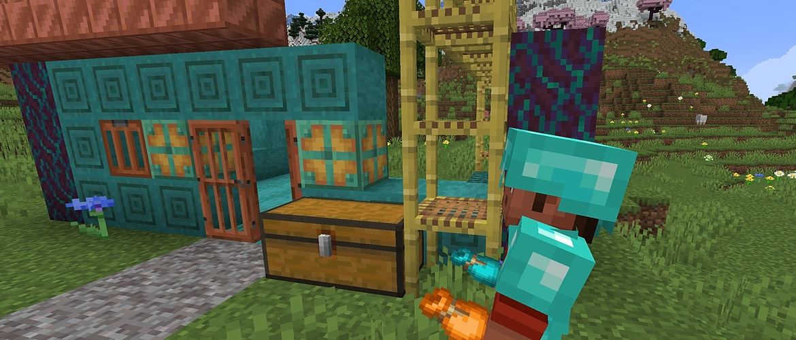
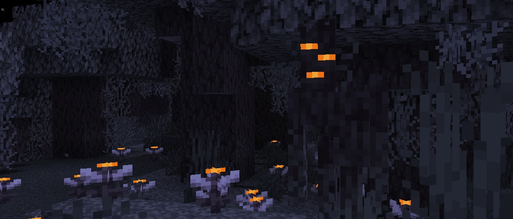
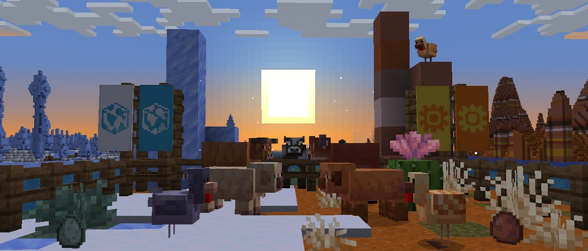
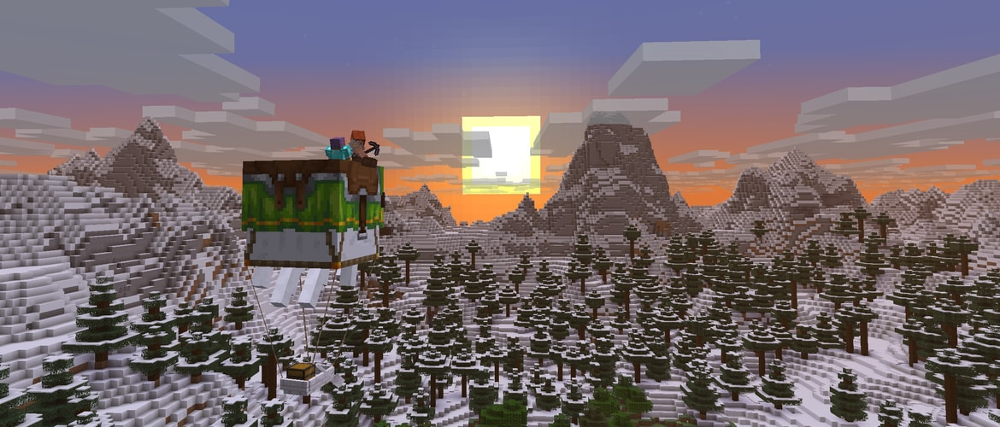
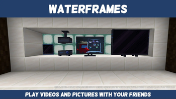
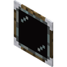

VanillaBackport catches this pack up on six real Minecraft updates it skipped by staying on 1.20.1, and Waterframes brings full multimedia screens you can build into any base. Here is everything that's changing.
One mod, six real Minecraft updates. VanillaBackport ports the actual content from newer vanilla drops onto our 1.20.1 world, so the pack can pick up years of updates without ever changing Minecraft version. Here is every update it currently brings in, each as its own addition.

Decorated pots can now hold a single item and interact with hoppers, droppers, and comparators. Smash one with a projectile and it shatters. Bats also got a full visual redesign.

Wolves can wear armor now, crafted from Armadillo Scutes and dyeable like leather armor. Eight new wolf coat variants spawn based on biome, alongside the Armadillo itself in savanna and badlands.

Bundles: craft one from string and leather and carry a mixed stack of up to 64 items in a single slot, dyeable into 16 colors. Also brings baby Dolphins and Squids, plus small, medium, and large Salmon.

The Pale Garden: a moss-covered, animal-free biome built around Pale Oak trees and home to the Creaking, a mob that only moves when nobody is looking at it. Brings the Pale Oak wood set and Resin blocks too.

Warm and cold variants for pigs, cows, and chickens depending on the biome they spawn in, plus new foliage: Leaf Litter, Wildflowers, Firefly Bushes, and Cactus Flowers, along with falling leaf particles.

The Happy Ghast: raise a Ghastling found in the Nether into a rideable flying mount with a craftable saddle. Also brings the player locator bar and the new "Tears" music disc.
A way to put real images and video into the world, from simple picture frames to full home-theater builds.


Place Frames, Projectors, TVs, and Big TVs anywhere and feed
them an image or video URL (YouTube, Twitch, or a direct link) to build
screens, cinemas, or simple picture frames around the base. A Remote Control
item and the /waterframes command let you manage them from afar.
Also included as supporting libraries, required by Waterframes and invisible in play: CreativeCore (GUI and networking) and WATERMeDIA (the multimedia engine that decodes video and audio). WATERMeDIA's native codec files are client-only and are not installed on the server.